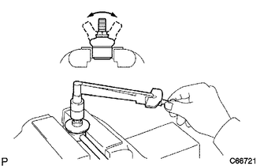

PROCEDURE
INSPECT FRONT STABILIZER LINK ASSEMBLY

Inspect the turning torque of the ball joint.
Secure the front stabilizer link assembly in a vise using aluminum plates.
Note
Do not overtighten the vise.
Install the nut to the front stabilizer link assembly stud.
Using a torque wrench, turn the stud continuously at a rate of 3 to 5 seconds per turn and take the torque reading on the 5th turn.
| Turning Torque |
|---|
| 0.05 to 1.96 N*m (0.6 to 19 kgf*cm, 0.5 to 17 in.*lbf) |
Tech Tips
If the turning torque is not within the specified range, replace the front stabilizer link assembly with a new one.
Turn the stud to check that the stud does not catch and there is no play
Tech Tips
If the stud catches or there is play while turning, replace the front stabilizer link assembly with a new one.
Inspect the dust cover.
Check that the dust cover is not cracked and that there is no grease on it.
Tech Tips
If the dust cover is cracked or there is grease on it, replace the front stabilizer link assembly with a new one.